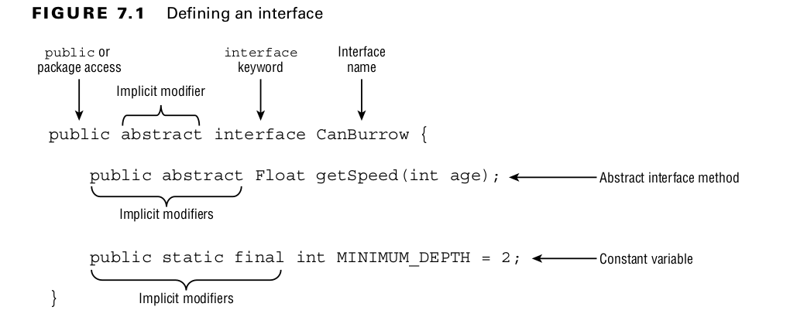

Declaring an Interface
Table of Contents
1. Declaring an Interface
Defined with the interface keyword.
1.0.1. Example
In Figure 7.1, our interface declaration includes an abstract method and a constant variable.
Interface variables are referred to as constants because they are assumed to be public, static, and final.

public abstract interface CanBurrow {
public abstract Float getSpeed(int age); // Abstract Interface Method
public static final int MINIMUM_DEPTH = 2; // Constant
}
1.0.2. Example
This example doesn’t compile, as WalksOnTwoLegs is an interface and cannot be instantiated.
public abstract interface WalksOnTwoLegs {}
public class Biped {
public static void main(String[] args) {
var e = new WalksOnTwoLegs(); // DOES NOT COMPILE
}
}
1.0.3. Example
This example, WalksOnEightLegs, doesn’t compile because interfaces cannot be marked as final for the same reason that abstract classes cannot be marked as final.
public final interface WalksOnEightLegs {} // DOES NOT COMPILE
1.1. Implementing an Interface
public class FieldMouse implements Climb, CanBurrow {
public Float getSpeed(int age) {
return 11f;
}
}
1.2. Exam Trick
One aspect of an interface declaration that differs from an abstract class is that it contains implicit modifiers.